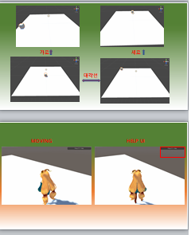
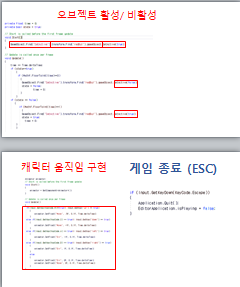

[C/C#] Unity를 이용한 게임제작
-Unity에서 필요한 함수 이해(transform함수,GameObject함수,Input함수,delta함수 등)
 
[HTML/CSS]
-Chrome기반 HTML코딩
-CSS를 이용한 StyleSheet작성

[Python] Flask를 이용한 웹홈페이지 제작
- urlib.request와 BeautifulSoup를 이용한 크롤링
- BootStrap 사용
- SQLite3를 이용한 데이터베이스 활용
- 사용자끼리의 팔로우와 언팔로우기능 구현
- md5 라이브러리를 이용한 gravatar제작
-werkzeug.security를 이용한 Hashing 처리
Arduino를 이용한 데이터 시각화
- 온도,습도,조도의 데이터를 실시간 시각화처리
- Arduino IDE, MongoDB, Node.js이용
- JavaScript, C/C++ 사용

Arduino를 이용한 ECU Controller제작
- RPM, Voltage,Cooling Water,OliPress 화면구성
- dial,button 형식 RPM 제어 구현
- MCP2515를 이용한 CAN 통신 데이터 입 출력
- J1939 표준규격에 맞춰 제작